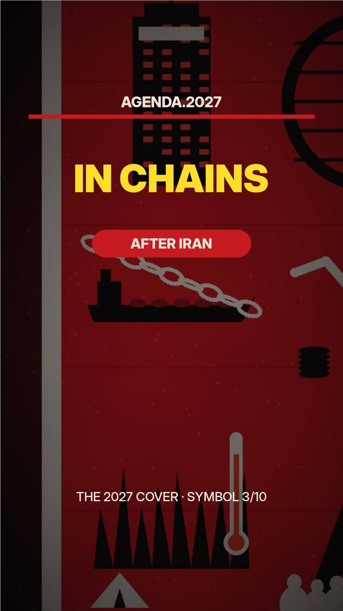

In chains ⛓️

▶ Watch the video on InstagramAn oil tanker in chains on the 2027 cover. It's not a metaphor.
About a fifth of the world's oil passes through the Strait of Hormuz. After the 2026 war, it's still a bargaining chip.
The tanker isn't a prophecy. It's a hostage.
Sources named in the video
- AP · Reuters · Feb 28, 2026
- Scripps / AP · April 2026
- Reuters via InvestingLive · Nov 4, 2026
- Euronews · Nov 2, 2026
Will Hormuz reopen in 2027? Tell us in the comments on Instagram.
Follow @agenda2027.daily